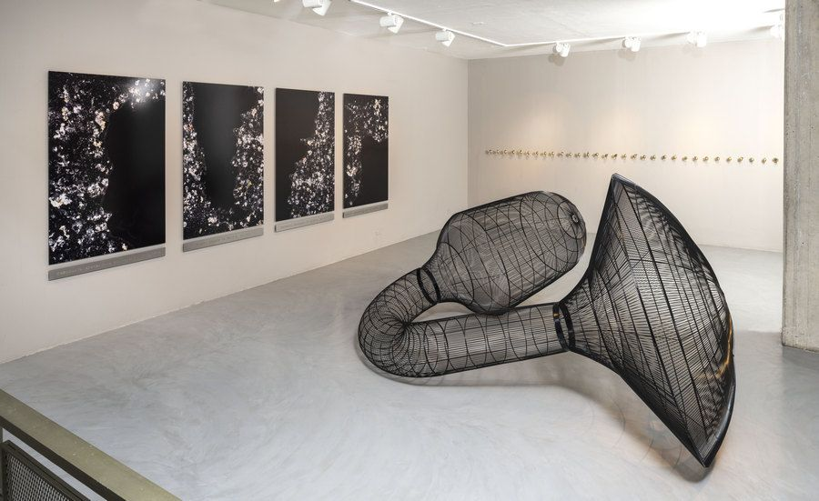

La obra escultural presenta tonos negros, oscuros que representan la incertidumbre en el espacio curvo en función del tiempo.
La obra escultural presenta tonos negros, oscuros que representan la incertidumbre en el espacio curvo en función del tiempo.
El espacio vacío, transparente y lleno de aire, paradojas, bucles, ruinas del lenguaje y espejismos.
"Busco plasmar, no sé, son tiempo contemporáneos."
"Alguien me dijo una vez que parece un puente, como si fuera un agujero de gusano, yo le dije que está loco, pero le entendí, estoy igual."